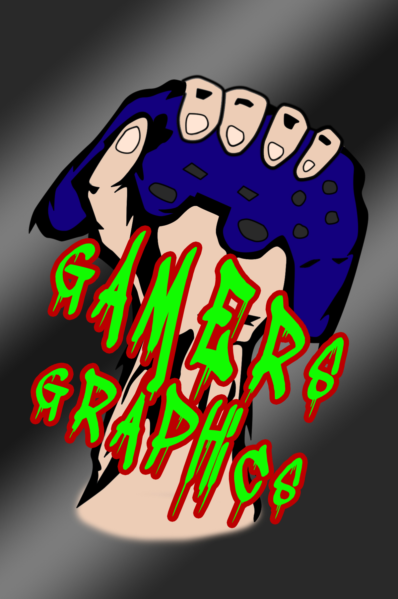

Gamers Graphics is a advertising webpage that gives you the best games from any consoles (PC, Play Station, Play Station Portable, etc.). You can browse our games by clicking the buttons on our navigation bar found at the top. The "TOP 15 GAMES" button will lead you to our reccommended games that you should try. The "GAME SHOP" button allows you to browse games by your preffered category and will lead you
to the lists of games. Clicking on each game will lead you to its overview, system requirements, screen shots, gameplay video, official website and buying or downloading site. When you are bored, we also placed some mini games from Y8 GAMES in the "MINI GAMES" button. The last button allows you to have some of our contact details and some info about our team. you can also
leave some comments and like us.
Best Viewed In:
Resolution: 1024x768px or higher
Browser: Google Chrome or Mozilla Firefox